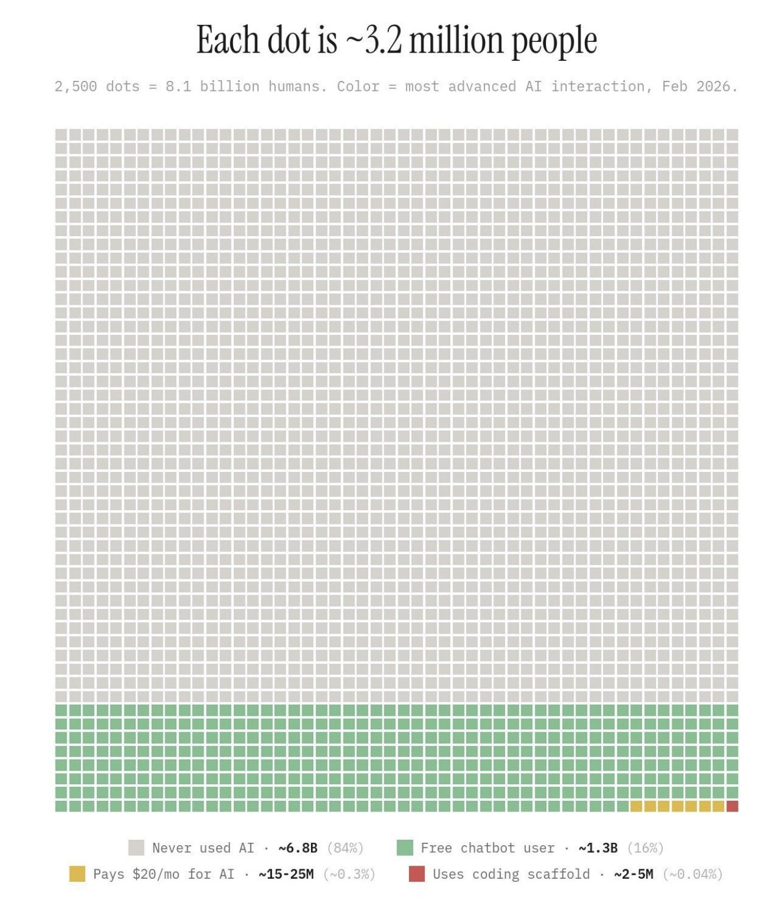
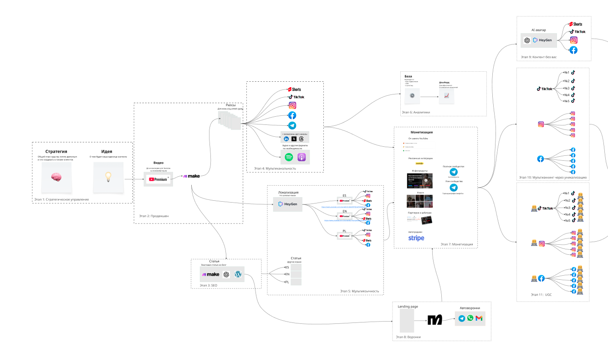
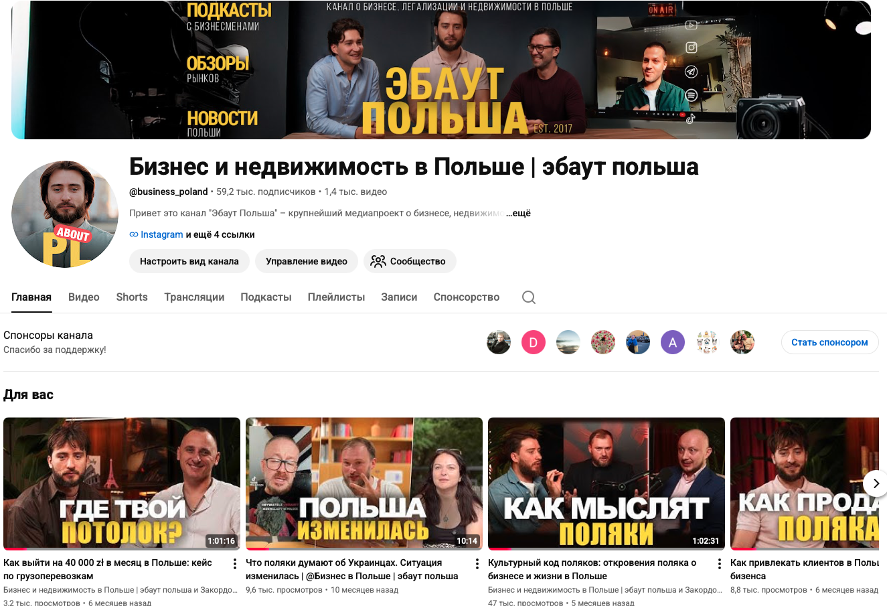

Добро пожаловать
в «Карту AI-перехода»
Найди свою новую модель заработка с помощью AI
Что нас ждёт
Что реально происходит с рынком и куда он движется
Где ты сейчас застрял и почему. Дам AI-инструмент для самопроверки
Карта рабочих моделей заработка с AI в новой реальности
Программа сопровождения для тех, кто захочет не разбираться один
Начинаем с самого важного
Прежде чем диагностировать тебя и показывать модели — расскажу о каком масштабном и глобальном рынке идёт речь.
Что происходит с рынком и куда он движется
За 18 минут ты поймёшь две вещи
Почему «использовать AI» больше не равно «зарабатывать с AI»
Окно перехода: сколько у тебя реально времени до того, как порог входа взлетит до точки, где простому человеку уже будет нереально войти в рынок
Парадокс, с которого начнём
Карта AI-проникновения · Февраль 2026

AI добавит мировой экономике к 2030
людей в мире никогда не пробовали AI
Я не теоретик. Я практик.
33 года · 13 лет в Польше · построил систему, которая работает прямо сейчас
подписчиков · медиапроект про жизнь и бизнес в Польше — приносит клиентов из органики
в бизнесе · 500+ компаний, специализация — вход на польский рынок
1 видео → 130 единиц контента в месяц · 3 языка (RU/UA/EN). SEO + GEO трафик
€17 400 инвестиций в обучение за 2024 год — у мировых экспертов (FORMULA, NOM, Mindvalley, MasterClass).


Я был там, где, возможно, сейчас ты
Польша и диджитал-агентство с нуля
20 сотрудников. Одни из ТОП в СНГ по разработке лендинг-пейдж
Переход в бизнес-консалтинг в Польше
Сотни клиентов по бухгалтерии. Прозрение → внедрение AI и контент-заводов
ТОП-1 медиапроект про бизнес в Польше
«В какой-то момент понял: я делаю больше работы, а зарабатываю столько же и работаю больше. Я продавал часы…»
Я не мог конкурировать с компаниями, которые бесплатно регистрируют фирмы или зарабатывают на клиенте только через год. Мне нужна была не больше часов в сутках. Мне нужна была СИСТЕМА.
Сапожник в сапогах
Мой собственный бизнес сегодня — это живое доказательство того, чему я учу.
ТОП-1 медиапроект в нише. Сеть партнёров. Сотни лидов в воронку — органически, через контент-завод.
Я понял, куда идёт рынок
это и есть наш сегодняшний урок
Я понял свои сильные стороны и перестал расфокусироваться
Я понял, какие конкретно бизнес-модели бывают в новой реальности
{kind=link}
{kind=link}
{kind=link}
Это сработает, если ты узнал себя
SMM · копирайтер · дизайнер · таргетолог
«Заказов меньше, клиенты торгуются жёстче»
юрист · бухгалтер · коуч · консультант
«Я лучший в деле, но клиент находит других в интернете»
малый бизнес, продукт или услуга
«AI меняет правила, и я не понимаю как встроить его в свой бизнес»
«Боюсь не что уволят — что потом не возьмут»
«Пробую нейронки, но это не превращается в деньги»
Или узнал себя по симптому:
- ☐ ФОМО — теряешь возможности, но не знаешь, за что хвататься
- ☐ изучаешь всё по чуть-чуть — но нет конкретного продукта
- ☐ у всех всё несётся — а у тебя стагнация
- ☐ AI реально вытесняет — и ты видишь прецеденты в нише
Есть одна вещь, которая отличает тех, у кого получилось
AI-ПЛЕЧО
ВМЕСТО
AI-КОНКУРЕНЦИИ
Не «победить AI» — это бесконечная гонка.
Не «бояться AI» — это паралич.
Использовать AI/партнёра как рычаг под свою экспертизу — единственный путь.
Это работает прямо сейчас
Florian Vates — iOS-разработчик из Австрии. 2 года строил приложения один. MRR упёрся в потолок.
Партнёрство с контент-креатором Charlie Alvarez:
MRR за 2 месяца → сегодня $50 000/мес
в trial-старт
в платных подписчиков (для consumer-app это космос)
Найди свою точку усиления. Не делай всё сам. AI-плечо — это любой инструмент или партнёр, который становится мультипликатором твоей экспертизы.
убеждений
Что на самом деле происходит с рынком — в цифрах, которые невозможно развидеть.
Тебя научили задавать неправильный вопрос
«Какой AI выбрать?»
«Какую нейронку освоить?»
«Как написать промпт?»
«Какая модель заработка работает в новой реальности — и какая подходит мне?»
5 признаков рабочей модели заработка с AI
Прогоняй любую идею через этот фильтр. Не проходит — отбрасывай.
Усиливает твою экспертизу — не заменяет её
Масштабируется без линейного роста часов
Создаёт актив, а не «время-деньги»
Не требует становиться кем-то другим — не блогером, не айтишником
Имеет понятную бизнес-модель — где, у кого и за что берёшь деньги
Запомни эти 5 пунктов. Через минуту прогоним по ним 6 «модных» моделей.
Что чаще всего предлагают — и почему это не модель
$13 триллионов. Что это значит для тебя.
AI добавит к мировой экономике к 2030 году
Даже 0,02% от рынка — это $2,6 млрд
а 0,0001% — это $13 млн
Скорость, к которой никто не готов
до 100 млн пользователей
- TikTok — 9 месяцев
- Instagram — 2,5 года
- Spotify — 4,5 года
рост требований AI-навыков в вакансиях за 2 года
- Янв 2024 — $87 млн
- Дек 2024 — $1 млрд
- Дек 2025 — $9 млрд
- Фев 2026 — $14 млрд
- Апр 2026 — $30 млрд
- Май 2026 — $47 млрд
за 28 месяцев
Бизнес уже принял решение
компаний регулярно используют AI хотя бы в одной функции (было 78% год назад)
уже используют генеративный AI (было 33% в 2024)
расходы бизнеса на AI-системы в 2026 году
общие расходы на AI во всём мире в 2026 (+44% год к году)
Рынок разорвался. Это видно в цифрах.
Анализ 5 миллионов вакансий на Upwork с момента появления ChatGPT
- 1Простой копирайтинг −33%
- 2Переводы −19% (ставки −20%)
- 3Customer support −16%
- 4Транскрибация / расшифровка
- 5Базовый веб-дизайн
- 6Computer graphic artists −33%
- 1Видеопродакшн +39%
- 2Web design +10%
- 3Graphic design +8%
- 4Backend development +6%
- 5Frontend / web dev +4%
- 6Director-level позиции
И падают не только объёмы
Пример — переводчики на Upwork
Заказов
меньше людей нанимают
Часовая ставка
тем, кого нанимают — платят меньше
AI забирает не «простую работу». Он забирает мозг.
года образования (магистратура+)
года образования (бакалавриат)
49% профессий — AI уже выполняет минимум четверть задач
Что из всего этого следует — буквально
Все три ингредиента. Если выпадает хоть одно звено — формула не работает.
Где мы на самом деле в этой истории
Разговоры с ботом — ChatGPT просто появился
Картинки и видео — Midjourney, Sora
Автоматизация процессов — n8n, Make, Zapier + AI
AI-агенты — делают задачи end-to-end
Зрелость рынка ← МЫ ЗДЕСЬ
Human-in-the-loop — «человек встроен в процесс»
Шум стих. И это самая опасная новость.
- 🔊 «AI заменит всех!»
- 🔊 Toolify, Product Hunt, новости каждый день
- 🔊 Все обсуждали
- 🔇 Компании молча встраивают AI в процессы
- 🔇 Сокращения — без громких заявлений
- 🔇 Никто не «обсуждает» — все действуют
Шум стих. Замена началась.
Тебя не уволят. Просто не наймут никого вместо тебя.
entry-level найма в Meta, Microsoft, Google за год (2023→2024)
вакансий junior-разработчиков в США за год (2023→2024)
доля junior-вакансий (≤3 года опыта) — junior-входы массово закрываются (2018 → 2024)
занятости среди разработчиков 22–25 лет с конца 2022
«AI может уничтожить 50% entry-level white-collar профессий за 1–5 лет.» — Dario Amodei, CEO Anthropic
Entry-level white-collar — начальные офисные позиции, куда обычно идут выпускники вузов или те, кто только начинает карьеру в «беловоротничковых» профессиях.
сдвиг
Хорошая новость после всех цифр: у тебя уже есть всё для перехода.
У тебя уже есть всё для перехода
Тебе не нужно становиться программистом, блогером или AI-инженером. Тебе нужна переупаковка.
Сколько лет ты копил знания в своей сфере — это твой капитал. AI не отменяет его. AI его усиливает.
Ты знаешь реальные проблемы людей. AI этого не знает — он только инструмент. Ты — оператор.
Чек-листы, шаблоны, паттерны — это нельзя загуглить. AI без тебя — это калькулятор без задачи.
День 2 как раз про это: AI-инструмент диагностики, который покажет твои точки опоры — а не пробелы.
Я слышу твои сомнения. И отвечу прямо сейчас.
Узнал хоть одно сомнение — нормально. Ровно поэтому я веду марафон 3 дня, а не одно видео.
Дальше — твой выбор. Но сегодня выбирать ничего не надо.
Дальше — твой выбор
Когда понимаешь, что надо двигаться — есть два пути.
- Год-полтора, чтобы прочитать всё, что нужно
- ~$15 000 на курсы и ошибки
- Найти своих экспертов и проверить их
- Самому собрать систему из кусочков
Возможно. Я сам так делал.
- Структура, которую я уже собрал
- Доступ к моим ошибкам и решениям
- Сопровождение по этапам, а не курс «делай как я»
- Сообщество людей, идущих тем же путём
Программа на 8 недель. Подробности — после марафона.
Завтра — самый важный день марафона
- ✓ AI-промпт самодиагностики — увидишь свои сильные стороны и точку, где застрял
- ✓ Узнаешь свою точку А — не «как у всех», а конкретно у тебя
- ✓ Персональный профиль — какие из 7 моделей подойдут именно тебе
Если вынес хоть одну мысль — Дня 2 жди. Это твой день.
Если не вынес — всё равно жди. Диагностика покажет, почему.
В любом случае — 24 часа на одно: подумать, что из сегодняшнего тебя зацепило.
До завтра.
Все цифры — с прямыми ссылками
[1] McKinsey Global Institute · Notes from the AI frontier — mckinsey.com/featured-insights/artificial-intelligence
[2] Indie Hackers · Florian Vates, $50k/mo · 13 мая 2026
[3] Reuters / UBS Research · ChatGPT fastest-growing user base
[4] VentureBeat · Anthropic $30B run rate · Simon Willison Blog ($47B)
[5] McKinsey · The state of AI in 2025
[6] IDC · Worldwide Spending on AI-Centric Systems
[7] Gartner · Worldwide AI Spending $2.5T in 2026
[8] Bloomberry · 5M + 180M jobs analysis
[9] Anthropic Economic Index 2026
[10] SignalFire · Big Tech Hiring Report 2025
[11] Stanford Digital Economy Lab (Brynjolfsson)
[12] IEEE Spectrum / NACE Job Outlook 2026